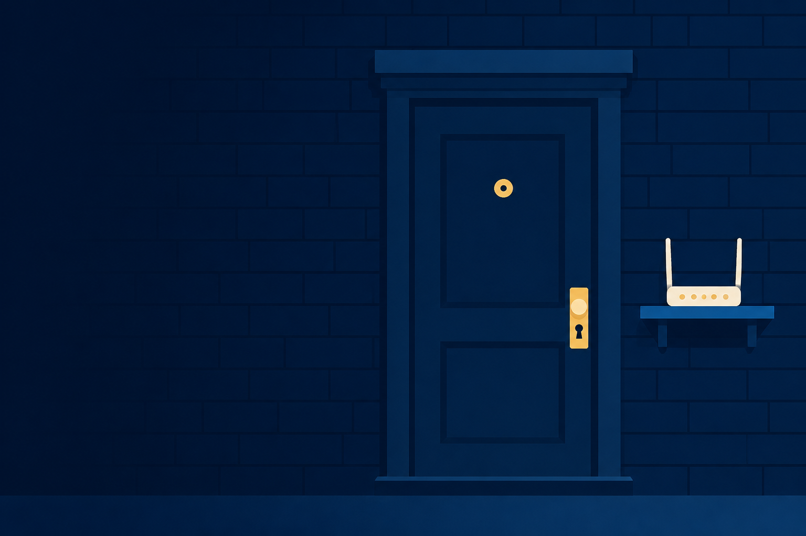
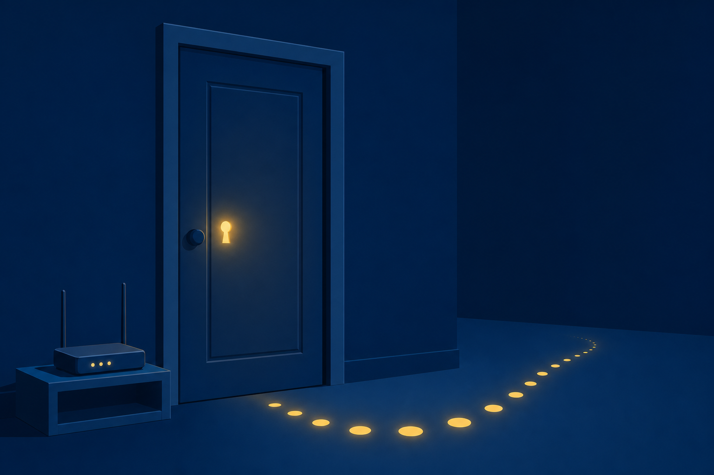

01
Name
the attacks aimed at a small office: social engineering, password cracking, and injection.

Attacks, wireless protocols, router hardening, and physical locks: SOHO network security for the smallest offices.
Start here: Your home router shipped with a password printed on a sticker. Who else has read that sticker?
the attacks aimed at a small office: social engineering, password cracking, and injection.
the wireless security protocols, and pick the one worth using today.
the router’s security settings, then back them with physical measures at the door.
One small-office router rides the whole class. It arrived this morning, and it still runs every factory default.
No settings yet. Attacks first.
Every row is a door somebody forgot to close. The rest of 18.1 is who walks through.
A similar SSID invites your devices in, then snoops the traffic.
Services like Telnet do not encrypt traffic.
With a partner: Name all three attacks using the exact terms from this lesson.
The browser runs both. It cannot tell them apart, because both appear to come from the trusted site.
SELECT # read rows INSERT # add rows UPDATE # change rows DELETE # remove rows
Injected input manipulates the database into an undesired operation.
AES, a symmetric algorithm, does the encrypting under both WPA2 and WPA3. Forward secrecy means a stolen key cannot unlock recorded traffic.
The supplicant asks to join.
Passes credentials along · 802.1x EAP
Authenticates the user or device. Then the door opens.
Multifactor authentication stacks on top of any of them.
With a partner: Name all three, then say which one your home network uses tonight.
Watch out: hiding the SSID does not secure the network. Packet sniffers and Wi-Fi analyzers still find it. Encryption does the securing.
An internet-facing port sends traffic to one chosen internal host, or one internal port.
Disabled. A closed port is a wall.
Devices write their own ACL rules. If not required, disable it.
With a partner: Name the setting for the first two jobs, then rule on the third.
Access control vestibule: only one door opens at a time. The tailgater stays stranded.
Biometric misses: a Type 1 error rejects the right person. A Type 2 error admits the wrong one.
Six factory defaults, six deliberate choices. Each row closes a door, and you can name the attacker who was going to use it.
One router, four lessons, zero defaults.
Name the phishing variants that arrive by voice, by text, and by QR code.
In WPA3, what replaced the 4-way handshake, and what replaced CCMP?
Which setting exposes one internal host on purpose, and which subnet isolates web-facing hosts?

Next step: Run the CertMaster labs: Respond to Social Engineering Exploits, Explore SQL Injection Flaws, and SOHO Router Configuration. Module 19 hardens the workstation itself.